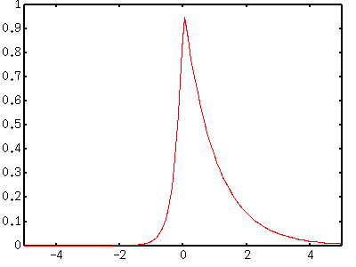
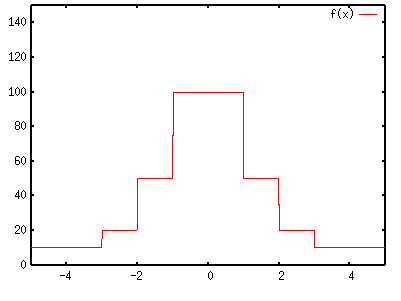
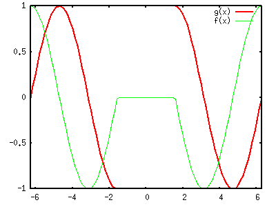

<!DOCTYPE HTML PUBLIC "-//W3C//DTD HTML 4.01 Transitional//EN">
<html lang="ja">
<head>
<title> gnuplot / misc (1) </title>
<!-- Generated 1999/ 9/ 1 -->
<!-- $Id: misc1.html,v 1.17 2005/11/20 08:04:36 kawano Exp $ -->
<meta http-equiv="content-type" content="text/html;charset=iso-2022-jp">
<link rel="stylesheet" href="style-new.css" type="text/css">
</head>
<body>

<table width="100%" border="0" cellpadding="0" cellspacing="0">
<tr><td bgcolor="#cccc90" width="320">
    <div align="left">
    <a href="index.html">
    
    </a></div></td>
    <td bgcolor="#cccc90">
      <div align="center"><h3> - not so Frequently Asked Questions - </h3> </div>
      <div class="update"> update 2004/9/16 </div>
    </td>
</tr>
<tr><td bgcolor="#fae8ba"></td>
    <td bgcolor="#fae8ba"><div class="navi"> 
<a href="index.html">           HOME </a> |
<a href="intro/index.html">     INTRODUCTION </a> |
<a href="general.html">         INFORMATION </a> |
<a href="gallery/index.html">   GALLERY </a> |
<a href="misc1-e.html">         ENGLISH </a>
</div></td></tr>
</table>
<hr class="topsep">


<table width="100%" border="0" cellpadding="0" cellspacing="0">
<tr><td id="menu">
 <p> not so FAQ</p>
  <ul>
    <li><a href="legend.html">      $BK^Nc(B(Legend) </a>
    <li><a href="tics.html">        $BL\@9(B(Tics) </a>
    <li><a href="label.html">       $B%i%Y%k(B(Label) </a>
    <li><a href="plot1.html">       2$B<!85%W%m%C%H(B </a>
    <li><a href="plot3d.html">      3$B<!85%W%m%C%H(B </a>
    <li><a href="polar.html">       $B6K:BI8%W%m%C%H(B </a>
    <li><a href="parametric.html">  $BG^2pJQ?tI=<((B </a>
    <li><a href="datafile.html">    $B%G!<%?%U%!%$%k$N?tCM(B </a>
    <li><a href="postproc.html">    $B?^$rIA$$$?$=$N8e$O(B</a>
    <li><a href="misc1.html">       $B$=$NB>(B </a>
    <ul>
      <li><a href="misc1.html#9.1">
           3$B9`1i;;;R(B </a>
      <li><a href="misc1.html#9.1a">
           $BES@Z$l$?4X?t(B </a>
      <li><a href="misc1.html#9.2">
           $B%k!<%W(B </a>
      <li><a href="misc2.html#9.3">
           $B:G>.<+>hK!(B($B$=$N(B1) </a>
      <li><a href="misc2.html#9.4">
           $B:G>.<+>hK!(B($B$=$N(B2) </a>
      <li><a href="misc3.html#9.5">
           dumb$BC<Kv(B  </a>
      <li><a href="misc4.html#9.6">
           $BB?$/$N@~<o(B </a>
      <li><a href="misc4.html#9.7">
           $B?tCM$N=q$-9~$_(B </a>
    </ul>
  </ul>
 <br>
</td>


<td id="content">


<h1><a name="top"> $B$=$NB>$b$m$b$m(B ($B$=$N(B1) </a></h1>

<div align="center">
<a href="misc1.html"> 1 </a> | 
<a href="misc2.html"> 2 </a> | 
<a href="misc3.html"> 3 </a> |
<a href="misc4.html"> 4 </a>
</div>


<h2><a name="9.1"> 3$B9`1i;;;R(B (A ? B : C) $B$N;H$$J}!%(B</a></h2>

<p> 3$B9`1i;;;R$O!$(BC$B8@8l$N$=$l$HF1MM$KF/$-$^$9!$$H8@$&$H$"$^$j$KIT?F@Z$J(B
$B$N$G!$$b$&>/$7>\$7$/@bL@$7$^$7$g$&!%(B3$B9`1i;;;R$H$O(B A ? B : C $B$N$h$&$K=q(B
$B$+$l$?$b$N$G!$(BA$B$O>r7o<0!$(BB$B$H(BC$B$O<B9TJ8$G$9!%$3$l$O!$(BA$B$,??$J$i(BB$B$r<B9T$7!$(B
$B$=$&$G$J$1$l$P(BC$B$r<B9T$;$h!$$H$$$&0UL#$rI=$7$^$9!%(BX&gt;0$B$NHO0O$G$O(Bexp(-x)$B!$(B
X$B$,Ii$NNN0h$G$O(Bexp(4*x)$B$H$J$k4X?t$r%W%m%C%H$7$F$_$^$7$g$&!%(B</p>

<pre class="sample">
gnuplot&gt; set xrange [-5:5]
gnuplot&gt; plot x&gt;0 ? exp(-x) : exp(4*x) 
</pre>

<div align="center"></div>

<p> $B>r7o<0$rF~$l;R$K$9$l$P!$$b$&>/$7J#;($J4X?t$rDj5A$9$k$3$H$b2DG=$G$9!%(B
     X$B$N@dBPCM$NHO0O$K1~$8$F(BY$BCM$,N%;6E*$KJQ2=$9$k4X?t$r:n$C$F$_$^$7$g$&!%(B
     </p>

<pre class="sample">
gnuplot&gt; f(x)= (abs(x)&lt;1) ? 100 : ( (abs(x)&lt;2) ? 50 : ((abs(x)&lt;3) ? 20: 10 )) 
gnuplot&gt; set xrange [-5:5]
gnuplot&gt; set yrange [0:150]
gnuplot&gt; set sample 1000
gnuplot&gt; plot f(x)
</pre>



<p> $B$3$N4X?t$O!$(BX$B$N@dBPCM$,(B1$BL$K~$G$O(B100$B!$(B1$B0J>e(B2$BL$K~$G$O(B50$B!$(B2$B0J>e(B3$BL$K~$G(B
     $B$O(B20$B!$$=$l0J30$O(B10$B$H$$$&Dj?t$rM?$($k$b$N$G$9!%(BX$B$N6h4V$,JQ$o$k$H$3$m(B
     $B$G(BY$B$NCM$ON%;6E*$K$J$C$F$$$^$9$,!$(Bgnuplot$B$O$=$NItJ,$r@~J,$G$D$J$$$G(B
     $B$7$^$$$^$9!%(B<tt> set sample </tt>$B$r;H$C$F%5%s%W%j%s%0?t$rA}$d$7$F$$(B
     $B$k$N$O!$$3$NITO"B3ItJ,$G$N@~J,$,!$$J$k$Y$/?bD>$K$J$k$h$&$K$9$k$?$a(B
     $B$G$9!%(B</p>


<div class="top"><a href="misc1.html#top"></a></div>
<h2><a name="9.1a">$BES@Z$l$?4X?t!%(B</a></h2>

<p> Gnuplot FAQ$B$K$b=q$+$l$F$$$^$9$,!$(Bgnuplot$B$O%<%m$G$N=|;;$N$h$&$J?t3XE*(B
     $B$KDj5A$5$l$J$$I=8=$rL5;k$7$^$9!%$3$l$H(B3$B9`1i;;;R$r;H$C$F!$ESCf$GES@Z(B
     $B$l$k4X?t$rI=<($9$k$3$H$,$G$-$^$9!%(B</p>


<pre class="sample">
gnuplot&gt; f(x) = (abs(x)&gt;pi/2) ? sin(x+pi/2) : 0
gnuplot&gt; g(x) = (abs(x)&gt;pi/2) ? sin(x) : 1/0
gnuplot&gt; set xrange [-2*pi:2*pi]
gnuplot&gt; set yrange [-1:1]
gnuplot&gt; plot g(x) w l lw 2,f(x)
</pre>



<p> $B$3$3$G$O(B2$B$D$N@5894X?t(Bf(x)$B$H(Bg(x)$B$rDj5A$7$F!$Hf3S$7$F$$$^$9!%(Bf(x)$B$NJ}(B
     $B$O(B x$B$N@dBPCM$,(B90$BEY0J2<$G%<%m$K$J$k$b$N!$(Bg(x)$B$OF1$8NN0h$G%<%m$G=|;;(B
     $B$9$k$b$N$G$9!%8+$d$9$$$h$&$K!$(Bf(x)$B$NJ}$O>/$7$:$i$7$FI=<($7$F$$$^$9!%(B</p>


<div class="top"><a href="misc1.html#top"></a></div>
<h2><a name="9.2"> $B%k!<%W$N:n$jJ}!%(B</a></h2>

<p> gnuplot$B$N%3%^%s%I$K(B <tt>reread</tt> $B$H(B <tt>if</tt> $B$H$$$&$b$N$,$"$j!$(B
     $B$3$l$i$rAH$_9g$o$;$k$H4JC1$J%k!<%W$,:n$l$^$9!%(B<tt>reread</tt>$B$O%U%!(B
     $B%$%k$r$b$&0lEYFI$_D>$9%3%^%s%I$G$9!%(B<tt>reread</tt>$B$@$1$G$OL58B%k!<(B
     $B%W$K$J$j$^$9$N$G!$(B<tt>if</tt>$B$r;H$C$F0lDj$NH?I|2s?t$K$J$k$H=*N;$9$k(B
     $B$h$&$K$7$^$9!%(B</p>

<p> 3$B<!85%W%m%C%H$r2sE>$5$;$F!$4JC1$J%"%K%a!<%7%g%s$K$7$F$_$^$7$g$&!%2s(B
     $BE>$5$;$k$K$O!$;kE@$N3QEY$r(B0$B!A(B360$B$^$G$r(B5$B!k%9%F%C%W$GJQ2=$5$;$^$9!%$^(B
     $B$:<!$N$h$&$JFbMF$N%W%m%C%H%U%!%$%k$r:n$j!$(B"loop.plt"$B$H$$$&L>A0$K$7(B
     $B$F$*$-$^$9!%$3$3$GI=<($9$k4X?t$O(B exp(-x*x)*erf(y)$B$H$$$&$b$N$G$9!%(B
     </p>

<pre class="file">
theta = theta + 10
set view 60, theta
splot exp(-x*x)*erf(y)
if(theta&lt;360) reread
</pre>

<p>theta$B$N=i4|CM$d!$$=$NB>$N@_Dj$OJL$N=j$G9T$$!$(B<tt> load
     "loot.plt"</tt>$B$G%k!<%W$KF~$j$^$9!%3F%3%^$r%@%s%W$7!$E,Ev$J%=%U%H%&%'(B
     $B%"$r;H$C$F(BGIF$B$KJQ49$9$k$H%"%K%a!<%7%g%s$r:n$k$3$H$,$G$-$^$9!%(B</p>

<pre class="sample">
gnuplot&gt; set nokey
gnuplot&gt; set noxtics 
gnuplot&gt; set noytics 
gnuplot&gt; set noztics 
gnuplot&gt; set border 0
gnuplot&gt; set isosamples 40, 40
gnuplot&gt; set hidden3d
gnuplot&gt; set xrange [ -5 : 5 ]
gnuplot&gt; set yrange [ -5 : 5 ]
gnuplot&gt; theta = 5
gnuplot&gt; load "loop.plt"
</pre>


<div class="top"><a href="misc1.html#top"></a></div>
</td></tr></table>
<hr class="topsep">

</body>
</html>

